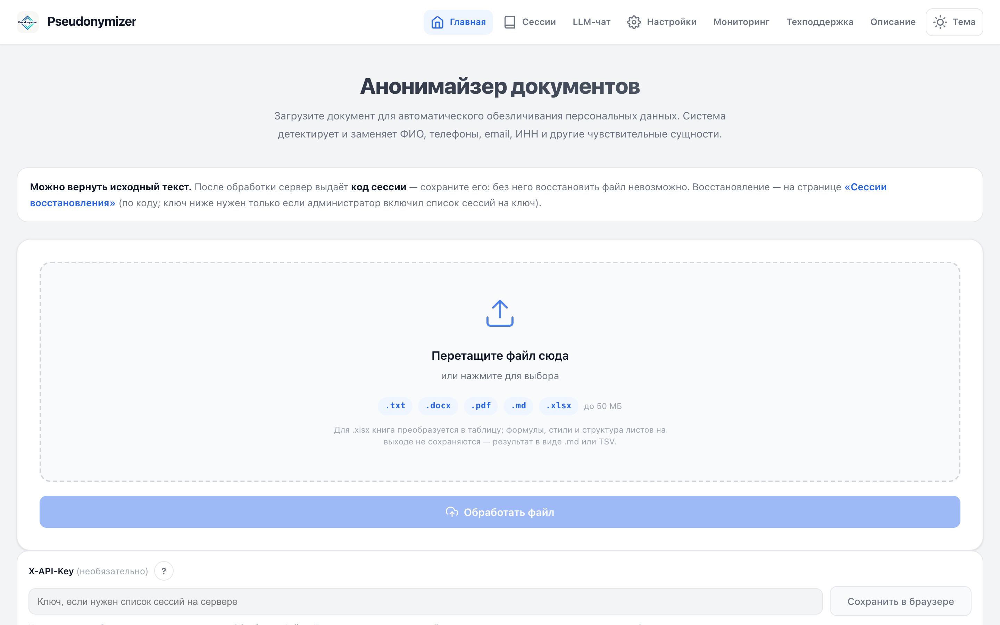
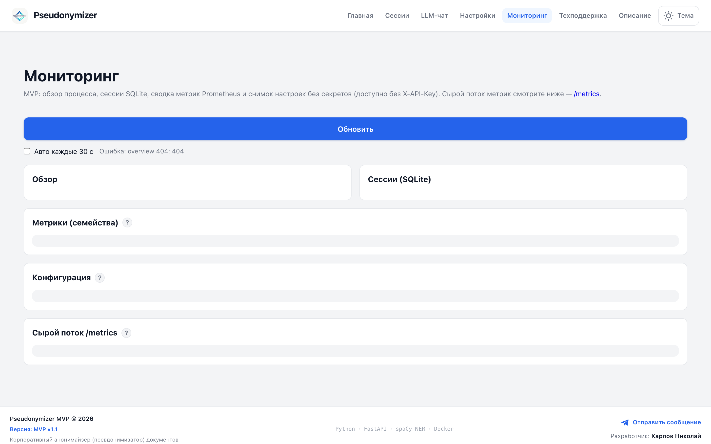

- Роль
- Архитектор и разработчик
- Стадия
- MVP в эксплуатации, интеграционный API доступен
- Стек
- Python 3.11 · FastAPI · Uvicorn · spaCy (ru/en) · SQLite · Docker Compose · slowapi
- Детекция
- Гибрид: regex + NER + кастомные словари
- Форматы
- txt · docx · pdf · md · xlsx
- Интеграции
- Sync API · async jobs · email-воркеры · мониторинг Prometheus
Проблема
Документы нельзя свободно передавать в LLM и в смежные системы. В корпоративных сценариях в текстах постоянно встречаются ФИО, контакты, ИНН, номера договоров и собственные таксономии (коды площадок, названия юрлиц). Ручная вычистка не масштабируется; простая замена по списку пропускает контекст и ломает согласованность плейсхолдеров внутри одного файла.
В корпоративном контексте без обезличивания пилоты с внешними LLM либо тормозятся службой ИБ, либо обходят политики «телефоном» — оба варианта плохие.
Решение — сервис псевдонимизации с предсказуемым поведением
MVP упакован в Docker: веб-интерфейс с drag-and-drop, предпросмотром и выгрузкой, плюс набор REST-эндпоинтов на FastAPI. Детекция строится как пайплайн:
- Регулярные правила для телефонов, e-mail, ИНН, номеров договоров.
- spaCy-модели для сущностей типа PERSON (ru/en).
- Кастомные типы из JSON-словаря (коды площадок, бренды, артикулы) — живут в отдельной SQLite-базе с резервным копированием перед записью.
При опциональном API-ключе создаётся сессия с маппингом — обезличенный текст уходит в LLM, ответ возвращается, и сессия позволяет восстановить контекст по тем же плейсхолдерам. Для крупных файлов срабатывает асинхронная очередь с опросом статуса задания вместо блокирующего ответа.

Поток обработки
- Загрузка. Файл в UI или API; проверка размера и лимитов; при большом объёме — постановка в очередь (HTTP 202 + job id).
- Детекция. Гибридный детектор с приоритетами типов; для PDF — постраничный режим на крупных файлах.
- Маппинг. Единый маппер значений → плейсхолдеры; статистика по типам сущностей в ответе API.
- Выдача. Предпросмотр, скачивание, конвертация формата; при сессии — восстановление исходника по session_id.
- Наблюдаемость. Prometheus-метрики, UI мониторинга, отдельные лимиты для email-интеграции.
Инженерные решения, не только «найти и заменить»
Фазы аутентификации для UI и отдельные правила для интеграционных префиксов. Внешний оператор инстанса и автоматизированные клиенты разнесены по разным контурам доступа.
Rate limiting с ключом по хэшу API-ключа или IP — slowapi на FastAPI. Отдельный пул лимитов для email-воркеров.
TTL и очистка сессий, дедлайны и семафоры на тяжёлые задачи. Документы не остаются «навсегда»; долгие задачи не блокируют пул воркеров на бесконечный срок.
Страницы настроек словаря и мониторинга с осознанным разделением: что требует ключа, что доступно оператору инстанса только из доверенной сети.

Сценарий «LLM поверх обезличенного текста»
Для случаев «отправить в публичную модель и вернуть результат» предусмотрен поток чата с подстановкой только плейсхолдеров и отдельная процедура восстановления. Это принципиально: нельзя смешивать сырой PII и внешние модели в одном запросе без явного шага. Архитектура заставляет оператора пройти этот шаг — он не «по умолчанию», а в коде.
Эффект — готовый контур для пилота ИБ и интеграторов
Команда получает воспроизводимый артефакт:
- Один репозиторий и понятный compose-сценарий с TLS для локальной проверки.
- Swagger для контрактов API.
- Выделенный API для пакетной обработки почты — без раскрытия внутренних ключей и путей в публичном описании.
- Метрики Prometheus и UI мониторинга.
Связанные артефакты ИБ
- HLD защищённого LLM-контура — Zero Trust, Defense in Depth, DLP-шлюз с матрицей сущностей, SIEM, ротация ключей, локализация логов в РФ.
- Матрица guardrails — маршрутизация данных, утверждённые и запрещённые инструменты, политики псевдонимизации, HITL по доменам, метрики качества.
- Политика защиты коммерческой тайны и приложения для согласования с корпоративной ИБ.
Все три артефакта применялись в реальных согласованиях с корпоративной ИБ и стали частью методологической базы для пилотов в крупном промышленном холдинге — см. кейс аудита.